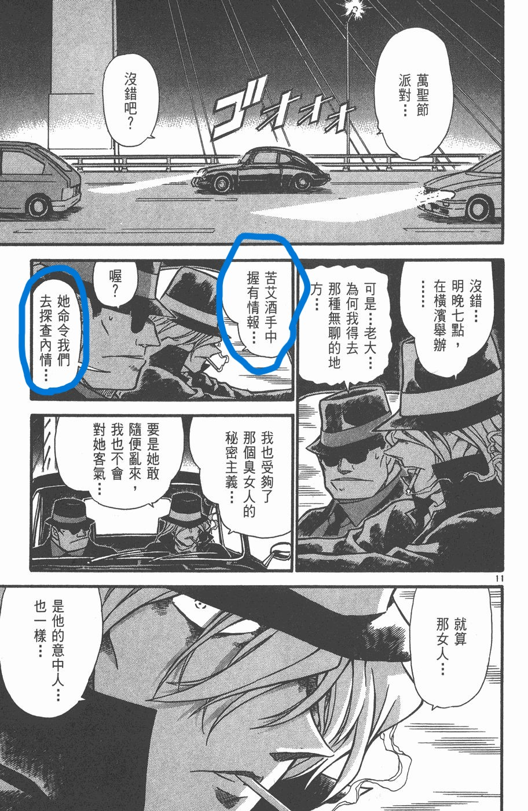

贝尔摩德真的偏爱柯南吗？真的在乎小兰吗？重看《满月篇》我不这么认为。
想要知道贝姐的真正意图就看她原先的布局是怎样的。
满月篇分两个舞台：
一、货物码头。
在这个舞台上，按照贝姐原来的计划会发生的事情是：贝姐提前把朱蒂的同伴遣散，并安排了自己的搭档。这里分两种情况：1、朱蒂先一步接到小哀，并把她带到码头。贝姐和朱蒂对峙的过程中杀了朱蒂，之后带走或杀死灰原哀。2、贝姐先一步接到小哀，朱蒂紧追不舍。贝姐开到码头，在与朱蒂的对峙中杀了朱蒂，后面带走或杀死灰原哀。
贝姐之所以让自己的同伴埋伏，应该是为了防止朱蒂也带了同伴。如果朱蒂的车里不止她一个人而是几个人，凭贝姐一个人很难对付，所以她才提前安排搭档埋伏起来。
1楼 | pingerlacus | 2024-05-14 14:09
二、幽灵船。
在船的这边：贝姐给毛利、柯南发了邀请函，让他们化装参加活动。同时，也通知琴酒、伏特加，让他们也到场。
这边的舞台乍一看很像是贝姐支走柯南，好让她顺利带走小哀，但真的只是这样而已吗？
我认为，她安排船上一系列事件的根本目的是：让琴酒杀了工藤新一。
首先，看一下参与人员。这里重点是还原在贝姐视角下会参与的人。
犯下杀人案的工作人员、毛利小五郎和毛利兰（她不会料到是园子代替，邀请函里也说了“同行的人也要化装”，说明她是邀请毛利兰的）、工藤新一（也许还有博士，但不重要）、琴酒和伏特加。这些人的作用是什么，为什么要让他们参加？这里重点讨论毛利小五郎和伏特加的作用，其他人都只是“各司其职”就不说了。
2楼 | pingerlacus | 2024-05-14 14:11
贝姐是邀请了琴酒和伏特加两个人的。琴酒不去，让伏特加去看看怎么回事。伏特加在船上所做的事可以用一个词来概括：观众。整个案件的策划与他无关、嫌疑人里没有他、也不帮忙破案、也没有帮贝姐拖延时间让她有更充足的时间带走小哀，可以看到他在整个案件中毫无参与感。
通观整个满月篇，琴酒和伏特加的戏份很多余，把他们的出场删了不会对结果有任何的影响，他们全程是旁观者。那安排他们出现的目的是什么呢？答案在一开头。

让他们亲眼目睹工藤新一没有死。
3楼 | pingerlacus | 2024-05-14 14:14
2024-05-14 21:40 | 贴吧用户_J7eUEPR:圈住的位置是台版翻译错误，下令者为BOSS而非“她”，考证可见米花学园吧翻译楼第25楼【 https://tieba.baidu.com/p/6611028841】
2024-05-14 23:20 | pingerlacus:回复 贴吧用户_J7eUEPR :不影响。分两种情况：1.boss知道贝姐的计划。那可能是贝姐向boss提及的让boss下命令的，这里就能解释为什么不怕琴酒去了幽灵船有可能会知道新一变小的事情了。2.boss不知道贝姐的计划。如果这样，这个翻译就有问题，逻辑不通。
2024-05-14 23:47 | 贴吧用户_J7eUEPR:回复 pingerlacus :本篇末尾BOSS给贝姐发消息斥责了她，称“给了太多自由”，一般认为BOSS并不知道贝姐的计划，贝姐也不知道BOSS察觉了异动让琴酒调查，贝姐的原计划不包括让工藤新一被伏特加发现
2024-05-15 00:47 | pingerlacus:回复 贴吧用户_J7eUEPR :boss如果不知道贝姐要做什么，就不会直接让琴酒去游轮，boss是不会知道游轮会发生故事的。如果boss一知半解，ta可以直接让琴酒跟着贝姐，这才是要调查贝姐的正确方法，而不是直接让他们去贝姐不会出现的地方。
2024-05-15 00:49 | pingerlacus:其次，贝姐帮boss做了很多秘密任务，boss一定很清楚贝姐的行事风格，如果ta不知道贝姐做什么而直接让琴酒参与很有可能导致贝姐的计划直接失败。
也可能有人会说支开琴酒、伏特加是为了不让他们知道码头的事免得影响贝姐抓小哀。这个观点通过没去的琴酒做对比就不攻自破了，他没有对贝姐的码头计划产生任何影响。
如果琴酒也去了，看到工藤新一没死，最有可能做什么？答案不言而喻。从这里可以看出这是贝姐对新一的杀心是大于灰原哀的。有人会反驳：不能让琴酒知道有A药，所以不能派琴酒杀灰原。可是这里的琴酒出动不是必要条件啊，琴酒和伏特加出动都不是必须的，贝姐不安排他们去船上也无所谓，但她就是这么做了。
4楼 | pingerlacus | 2024-05-14 14:18
2024-05-15 01:29 | 剑锋寒光:服部平次扮成工藤新一这个事情贝姐不可能知道，贝姐原计划里是柯南陪同毛利去参加幽灵船活动，新一是不会登场的。服部扮成工藤是柯南的计划。
2024-05-15 02:14 | pingerlacus:回复 剑锋寒光 :贝姐原计划是新一去的，所以她监听听到平次扮成新一不会觉得奇怪。至于为什么她认定柯南会恢复成新一，逻辑跟列车篇小哀要恢复成志保是一样的。
再来，
看看毛利小五郎的作用是什么，贝姐为什么也邀请他？
是破案吗？不是，邀请函一开头就写了愚蠢的侦探（意思一样，原话忘了）。我认为是为了让他认出工藤新一。因为工藤新一去了但没有人确认他的身份，那这个情报也没有用。我的这么说的依据来源于《危命的复活》。
其实对比一下危命和满月，你会发现有奇妙的对应。
危命里新一是扮成角色出现的；满月的party要求每人要扮演角色；
危命里新一会现身是因为有案件；满月里贝姐要挟工作人员制造案件；
危命里新一破案时自己侦查不跟人交流，后来拿开面具；满月里虽然不是新一，但描写方式一模一样；
危命里小五郎和小兰确认新一；满月里小五郎确认新一。
满月篇船上发生的事可以说是复制了危命篇的。这也是我为什么说贝姐要杀死新一，因为她不仅要他参加party，还故意设计案件让他现身，并找熟悉工藤新一的人确认他的身份。这已经不是单纯地支开新一了，就是有意让他暴露在琴酒和伏特加的面前，而暴露在琴酒面前意味着什么，贝姐一定很清楚。
5楼 | pingerlacus | 2024-05-14 14:23
三、拓展讨论
假设新一自己去了，琴酒也在船上了，那么他会看到工藤新一活着、会知道毛利小五郎认识工藤新一、会发现毛利兰和工藤新一很熟，他会像小哀说的那样不仅杀了新一还对他身边的人下手吗？那把毛利小五郎和兰推出来的贝姐到底对毛利兰是怎么看的呢？
如果琴酒要杀新一，会马上杀他、还是下船后杀他、还是更久之后再杀呢？要是更久之后再杀新一可是会变回柯南的，琴酒可以通过毛利家顺利锁定柯南就是新一，但这也会让琴酒知道了A药的存在。难道贝姐觉得让琴酒知道A药无所谓？还是琴酒知道A药后，组织会派人杀了琴酒？
贝姐对新一那么狠，真的是把他当作干儿子吗？贝姐无视小兰父亲和小兰自身的安危，让他们有被琴酒盯上的风险，真的把她当成天使去珍惜吗？
6楼 | pingerlacus | 2024-05-14 14:47
贝姐的真正目的。
如果事情按贝姐原来的安排发展，会是：她顺利带走小哀；朱蒂被杀；柯南、毛利一家被盯上，博士可能也不能幸免。柯南会不会向他父亲求助不知道，但至少他自己性命攸关也没有多余精力再去追查小哀的下落。
为什么不是杀了小哀而是带走她呢？我猜贝姐想让小哀继续研究她父母的银色子弹（纯猜想。没证据）。主要是贝姐跟银色子弹高度关联。除了满月篇外，列车篇也提到，正是在这里提到小哀父母研究的药叫银色子弹的。
在满月篇的最后，贝姐带走柯南时认为他还是“相信自己什么都能办到”的天真的人，但在发现他装了心电图（反正就是那个装备）后才认为他可以成为银色子弹的，也是发现心电图后才对柯南说放弃灰原。因此我认为她放弃灰原，不是其它理由，而是银弹一换一。
7楼 | pingerlacus | 2024-05-14 15:14
除此以外，满月篇还有一些有趣的地方。
比如在幽灵船上，大家都装扮，这是第一层表象；新一出现，这是第二层表象；真相是新一是平次。
在码头那边。小兰、园子等以为有人绑架小哀是第一层表象；朱蒂等以为贝姐要抓小哀是因为她父母是第二层表现；真相是小哀因她的真实身份被盯上。
贝姐的真实想法也有多层次：柯南、小哀等人以为贝姐要杀小哀是第一层；朱蒂、观众等部分人认为贝姐喜欢新一、小兰是第二层；而第三层，无人知晓。现在青山的描写在加强第二层，就说明它不是真的。这跟魔术师的表演一样，他越引导你关注，你跟着走就越难看破他的手法，那些他不希望你看到的才是解密的关键。
8楼 | pingerlacus | 2024-05-14 15:44
你的观点和我前两天在群聊提出的差不多诶
9楼 | 喜欢吼姆拉 | 2024-05-14 21:40
2024-05-15 00:51 | pingerlacus:英雄所见略同。我有这个想法后看看有没有人提出，但找不到相关的讨论。
贝姐行为本来就有讨论空间，无脑护亲儿子亲天使的言论看着脑壳疼。
10楼 | 其它各种 | 2024-05-14 21:51
贝姐护兰是因为满月篇二人的行动给了贝姐极大震撼之后才开始的吧
11楼 | 110男9 | 2024-05-14 22:13
这个有问题：
贝姐的设想里，去幽灵船的并非新一，而是柯南（还包括小兰），让琴酒目睹柯南并无任何危险。
12楼 | 之徙于南冥也 | 2024-05-14 23:26
2024-05-15 04:13 | pingerlacus:贝姐全程监听幽灵船那边的事，当平次扮演新一出现时她不惊讶，也没有改变任何计划，所以我倾向于她一开始就认为是新一去的。还有柯南是知道贝姐监听博士家的，他完全可以将计就计，直接说自己用新一的身份去，这样他可以留后手。
2024-05-15 04:24 | 🌐之徙:回复 pingerlacus :贝姐的监听委托了伏特加，她自己注意力都在朱蒂这边，至于柯南以什么身份去，对贝姐来说其实无所谓。 服部和柯南是同时撕掉面具的，何来贝姐不惊讶之说？
2024-05-15 04:26 | 🌐之徙:回复 pingerlacus :至于柯南满月的“可爱计策”，那还是算了，当时柯南水平一般般，将计就计难度太高。 让服部假扮新一不是为了让新一出现，而是因为服部没法变小。
所谓“被盯上”也不对，服部和毛利在那边破案，并没有被盯上
13楼 | 之徙于南冥也 | 2024-05-14 23:27
贝姐邀请小五郎的目的，是认为小五郎会带上一家人去幽灵船，这样自己可以从容攻取博士家，朱蒂不是贝姐对手
14楼 | 之徙于南冥也 | 2024-05-14 23:28
最后，贝姐的核心目的是【保守BOSS目的】
为了实现这个目的，杀小哀是一种方法，但不是唯一一种，贝姐窃听了小哀，知道小哀没有泄密，因而可杀可不杀，又由于柯南和有希子的先后保护，最后倾向于完全不杀，炸弹假死。
她不可能和波本一样把小哀带回酒厂的。
15楼 | 之徙于南冥也 | 2024-05-14 23:31
跟纽约篇一样，也许可以在单个篇章内自圆其说，但是整体上看是不行的。
你从整体上，更多的篇章和剧情来看，贝姐护亲儿子护的非常明显，基尔篇里琴酒要宁可错杀不可放过的时候贝姐挺身而出不惜面对琴酒枪口（琴酒可是真敢开枪的）难道是为了保护毛利？列车篇面对有希子，发现雪莉被“炸死”了以后转身就走，也不杀已经深度参与保护雪莉的有希子，更没有对柯南下手。波本篇直球要求波本不得对柯南小兰动手。朗姆篇贝姐被朗姆命令探查工藤宅，结果就跟亲儿子玩了一会儿侦探游戏，回去就敷衍朗姆。
如果贝姐如你所想的对柯南有杀意，那么这些篇章你都是解释不通的，除非你说贝姐精神分裂。
我一直认为好的分析应该是先整体后局部，局部细节不能凌驾于整体逻辑之上。
16楼 | 剑锋寒光 | 2024-05-15 01:39
2024-05-15 02:17 | pingerlacus:因为剧情分前后。当满月篇贝姐认为柯南能成为银色子弹，而她又特别需要银色子弹时，就会对柯南很好。你所举的例子全是满月篇后的内容。
2024-05-15 22:58 | 其它各种:通篇来看，贝姐没杀过人，也就朱蒂回忆里杀了她一家，主线时间谁也没杀过。灌姨妈药搞不好她已经知道了药的效果。
2024-05-25 01:13 | 贴吧用户_5CAWaa7:回复 其它各种 :满月幽灵船长没意见
说一下为什么贝姐会觉得是新一参加party，而不是柯南。
首先，贝姐单独给新一/柯南发了邀请函，意思就是我一定要你参加；其次，邀请函里表明了她知道新一=柯南，就明确地告诉柯南我抓住了你的把柄。再者，柯南知道了毛利小五郎、园子都去参加，如果游船上有揭露他身份的事情，那他不去就一切都暴露了，所以在柯南的视角里他是一定要去的。贝姐也清楚地知道这样威胁他，他不得不去。
那该怎么去？用柯南的身份还是新一的身份？只能用新一的身份。
在柯南的考虑里：1、邀请函里直接用身份暴露来威胁他，如果游船上真的有这个揭露身份的预谋，那么新一登场就能直接瓦解掉；
2、游船上可能有危险。虽然柯南安慰他妈妈不会有危险，但他也是第一次跟贝姐交手，他不知道贝姐的本性如何，所以必须要考虑有危险的情况。面对潜在的危险，用新一的身份比柯南好。如果柯南死了，警察调查时会发现柯南这个人根本不存在，那顺着牵出来的事就会很多。这跟列车篇小哀会想恢复成志保再死是一样的逻辑，除了三小只会伤心外，也能防止牵涉出来更多的人和事。
这是在柯南视角下考虑到的事，因此，如果他要参加就只能用新一的身份去。同样，贝姐也是这么认为，所以平次扮成新一出现时，她在监听器里听到没有觉得奇怪。
而这点，在列车篇也有。在小哀的视角下她只能恢复志保的样子，贝姐也这么认为，所以后来基德扮成志保的样子出现的时候贝姐觉得如她所料。
列车篇柯南用的手法跟满月篇是相似的，可以说，柯南真的拿捏了贝姐的心理，不愧是贝姐的银色子弹。
如果说贝姐能预测小哀是了解她本性，那她怎么知道柯南的想法呢？很简单，来自于监听，柯南用监听骗了贝姐。满月篇和列车篇都是。
17楼 | pingerlacus | 2024-05-15 03:22
从柯南视角，既然能收到给柯南/新一的邀请函，说明对方的首要目标并不是柯南，所以柯南本人是不可能去游船的。从贝姐视角，她想要的是“更多的可能性/银色子弹”，其优先级远在柯兰之上，如果柯南蠢到去游船上自爆，那他死不足惜，所以她才在货物码头作那番安排，那里才是主舞台，也等来了要等的三个人。
18楼 | 寻落微 | 2024-05-15 05:12
2024-05-15 22:47 | pingerlacus:邀请函和首要目标没有对应关系，这只是投石问路。
按照楼主说的，这样计划会有很大的问题，第一，贝姐对小哀是怀有绝对的杀意的，满月篇是准备直接杀，列车篇也是直接杀，不存在带走的想法。第二，在第一的基础上，对付柯南的计划也有问题了，想柯南死就很简单了，直接把校园的新一照片发给琴酒就行，甚至可以补一句这人在毛利家，以琴酒的能力，有了这些情报结合毛利名声大噪和新一消失的时间，毛利一家都得死，没必要搞这么多弯弯绕绕，为什么说要在第一点成立的情况下，因为如果贝姐想要带走小哀，还要解决柯南，那么必须让柯南在大号情况下死去，但这里也是有漏洞的，贝姐不能保证新一出现就会被杀，实际上伏特加也没立即出手，那么事后出手就会发现找不到新一，同样会扯出小哀，这样还是没有意义。
20楼 | 就一个疯子而已 | 2024-05-16 05:06
2024-05-16 05:16 | pingerlacus:第一点的基础可能就是错的。
2024-05-16 05:36 | 就一个疯子而已:回复 pingerlacus :第一点从贝姐的语言和行动表现的很明显，满月篇，她明确说了，要怪就怪她父母，而且给小哀保证杀了小哀之后只杀FBI，不动柯南，而且不是有人搅局她已经杀了小哀了。在当时那个情况下她没有说谎的理由。
2024-05-16 05:36 | 就一个疯子而已:回复 就一个疯子而已 :其次刚刚也说了，第一点错了对第二点影响不大，毕竟第二点是贝姐想要让柯南做完新一的身份死去，但是不可控因素太多，一旦新一变小，那么这一步计划就是完全没用的。
而贝姐这么安排的意义还是支走柯南，伏特加是boss这边派出来的，本身贝姐自由度就很高，琴酒可能还不一定能知道贝姐在哪，做什么，也就不存在跟着了。把毛利叫去的意见是在于给柯南做身份掩护，不管柯南上没上大号，出了案件他必然会去解决，但可以以毛利大侦探为挡箭牌，只是柯南没有这么做而已。还有就是从表现来看，她绝对对柯南小兰有偏爱的，绝对不是因为有可能是银色子弹的问题，看看她对另一个银色子弹的态度就知道了，不说偏袒，弄死他的心都有。再说到楼主说的情况，如果是贝姐因为柯南是银色子弹改变的态度，那么变化的太大了，前面计划着要借琴酒杀他，后面把他麻晕后又温柔的把他靠在车边，甚至破开他衣服，又把他弄晕后，放在车子里还怕他冷到把衣服脱给他盖着，自己拖着受伤的身体走的。不说其他，可能有些朋友都做不到这一点，把他丢到车外，自己开车走不行么。
21楼 | 就一个疯子而已 | 2024-05-16 05:27
你说要买满月篇之前的例子也不是没有，为什么在神秘的乘客篇的时候还帮柯南挡枪啊？警示厅恋爱物语的时候还伪装成新出医生帮助柯南帮助高木，之后还给了柯南一个wink，间接导致了暴露（也可以说是放水了）
22楼 | 耶和华仿聚 | 2024-05-16 10:41
2024-05-16 11:14 | pingerlacus:她扮新出医生做的事与其说对他好还不如说是博取他的信任。
2024-05-16 12:06 | 耶和华仿聚:回复 pingerlacus :我没见过博好感还是需要挡枪和放水的
银色子弹会是怎么样的药物呢？什么样的药效能对付组织？思来想去，我觉得精神类药物可以一试。如果能作用于观念、心理、意识，也许能从源头瓦解组织。但这种药也太梦幻了，连哈利波特里的人都做不出来。
23楼 | pingerlacus | 2024-05-17 17:11
2024-05-17 17:23 | pingerlacus:不知道当时银色子弹研究到哪一步了？说不定有样品留下来。